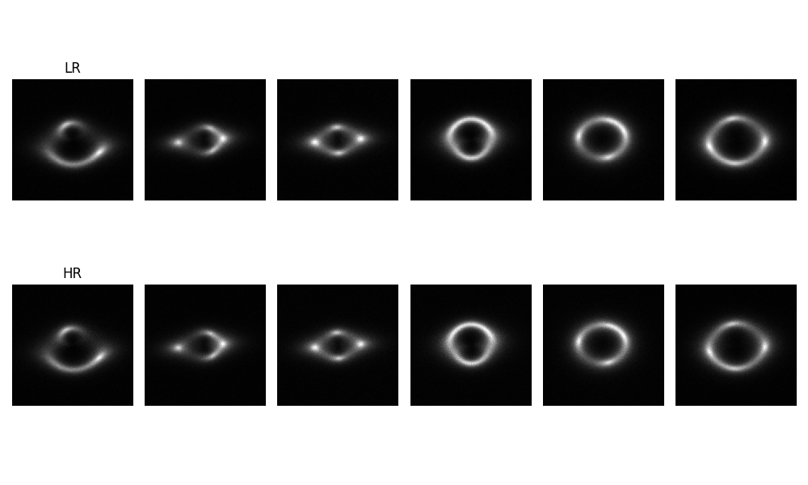
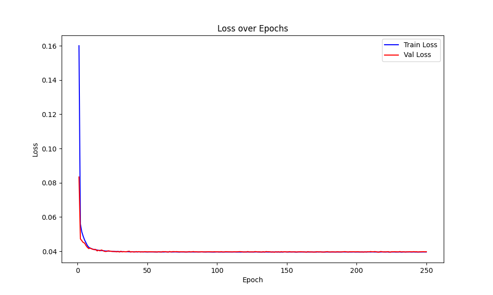

Specific Test VI - Foundation Model
This folder contains my solution for Specific Test VI: Foundation Model of the DeepLense GSoC 2025 project. The task involves pretraining a Masked Autoencoder (MAE) on strong lensing images and fine-tuning it for multi-class classification and super-resolution using PyTorch.
üìå Task Overview
- Pretraining a Masked Autoencoder (MAE) on no_sub samples to learn meaningful feature representations.
- Fine-tuning the MAE:
- For multi-class classification (distinguishing between no_sub, cdm, and axion).
- For super-resolution (upscaling low-resolution images using high-resolution ground truths).
üì∑ Sample Images for Each Task
Samples for multi-class classification

Samples for super-resolution

Prepare Data for Masked Autoencoder (MAE) Pretraining
Input for Encoder
Sample for splitted-image
Sample for masked-image
Masked patches and Visible patches
üõ† Model and Approach
1️⃣ Masked Autoencoder (MAE) Pretraining
- Goal: Learn a feature representation of strong lensing images.
- Architecture: Vision Transformer (ViT) backbone with a reconstruction head.
- Pretraining Loss: Mean Squared Error (MSE)
- Optimizer: AdamW
- Batch Size: 256
- Epochs: 250
2️⃣ Fine-Tuning for Multi-Class Classification
- Loss Function: Cross-Entropy Loss
- Optimizer: AdamW
- Batch Size: 256
- Evaluation Metrics: AUC Score, Accuracy
- Epochs: 250
3️⃣ Fine-Tuning for Super-Resolution
- Loss Function: Mean Squared Error (MSE)
- Batch Size: 256
- Evaluation Metrics: MSE, SSIM, PSNR
- Epochs: 200
- NOTE: The decoder used here is not suitable for super-resolution tasks. Architectural improvements are needed.
üìä Results
1️⃣ MAE Pretraining

2️⃣ Multi-Class Classification
Classification Report
precision recall f1-score support
no_sub 0.97 0.99 0.98 2945
axion 0.98 0.97 0.97 2990
cdm 0.97 0.95 0.96 2976
accuracy 0.97 8911
macro avg 0.97 0.97 0.97 8911
weighted avg 0.97 0.97 0.97 8911
3️⃣ Super-Resolution
Final Metrics
- Final Validation MSE: 0.002293
- Final Validation PSNR: 29.62
- Final Validation SSIM: 0.9190
Interpretation
- Lower MSE → Better reconstruction (less error).
- Higher PSNR → Better quality. (30–50 dB → Good | 20–30 → Moderate | <20 → Poor)
- SSIM = 1 → Identical images. SSIM ≈ 0 → No structural similarity.
- SSIM aligns more with human perception than MSE or PSNR.
Super-resolution Comparison